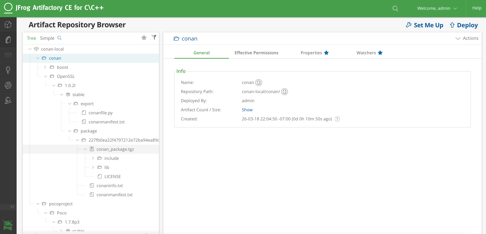

Artifactory Community Edition for C/C++
Artifactory Community Edition (CE) for C/C++ is the recommended server for development and hosting private packages for a team or company. It is completely free, and it features a WebUI, advanded authentication and permissions, great performance and scalability, a Rest API, a generic CLI tool and generic repositories to host any kind of source or binary artifact.
This is a very brief introduction to Artifactory CE, for the complete Artifactory CE documentation, visit Artifactory docs.
Running Artifactory CE
There are several ways to download and run Artifactory CE. The simplest one might be to download and unzip the given zip file, though other installers, included running from a docker image, are available. When the file is unzipped, Artifactory can be launched double clicking on the .bat or .sh script in the bin subfolder, depending on the OS. Java 8 update 45 or later runtime is required, if you don’t have it, please install it first (newer Java versions preferred).
Once Artifactory has started, navigate to the default URL http://localhost:8081, where the Web UI should be running.
The default user and password are admin:password.
Creating and using a conan repo
Navigate to Admin -> Repositories -> Local, then click on the “New” button. A dialog for selecting the package type will appear, select Conan, then type a “Repository Key” (the name of the repository you are about to create), for example “conan-local”. You can create multiple repositories to serve different flows, teams, or projects.
Now, it is necessary to set-up the client. Go to Artifacts, and click on the created repository. The “Set Me Up” button in the top right corner will give instructions how to configure the remote in the conan client:
$ conan remote add artifactory http://localhost:8081/artifactory/api/conan/conan-local
From now, you can upload, download, search, etc. this remote as any other one.
$ conan upload * --all -r=artifactory
$ conan search * -r=artifactory
Migrating from other servers
If you are already running another server, like the open source conan_server, it is very easy to migrate your packages, using the conan client to download the packages and re-upload them to the new server.
This python script might be helpful, given that it had already defined the respective local and artifactory remotes:
import os
import subprocess
def run(cmd):
ret = os.system(cmd)
if ret != 0:
raise Exception("Command failed: %s" % cmd)
# Assuming local = conan_server and artifactory remotes
output = subprocess.check_output("conan search -r=local --raw")
packages = output.splitlines()
for package in packages:
print("Downloading %s" % package)
run("conan download %s -r=local" % package)
run("conan upload * --all --confirm -r=artifactory")